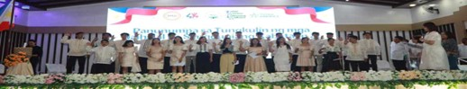

EMPOWERING YOUTH LEADERSHIP: ASIANITES ALUMNI and NEWLY ELECTED BSKE OFFICIALS JOIN FOR COMMUNITY DEVELOPMENT.
In a resounding of youth empowerment and civic engagement, the recently concluded Barangay Sangguniang Kabataan Election(BSKE) have brought forth a new generation leaders ready to make tangible impact in their communities. Among these emerging Leaders are Asianites Alumni,and students. A group of young individuals who have demonstrated exceptional skills, academic achievements, and a deep commitment to public service.
The Barangay Sangguniang Kabataan serves as crucial platforms for youth participation in local governance in the Philippines. The recently conclude election witnessed a surge of young candidates, showcasing enthusiasm and dedication to contribute meaningfully to the development of their respective Barangays. The BSKE provides an avenue for young leaders to voice their ideas, address community concerns, and foster positive change.
Meet the ASIA PACIFIC COLLEGE OF BUSINESS AND ARTS student and alumni pride. from DHTT Regular:Dien Zoe M. Santiago SK Kagawad of Brgy. Estrella, Renz Malvar from Paco Roman, Boris Villacorte and Charles Palma of Poblacion Sur, and our late student John Loyd Palma from Poblacion Centro all of them are Sk Kagawad. From Dhtt scholars; Mike Angelo Abad from San Esteban, Eros John R Dulay from San Gregorio, Emilio Deus and Billy Martin of Cabucbucan and John Kirby Abasta from Poblacion East. And from our future Educators BTVTEd; Sk Kagawad Darius Antalan from Aglipay and Jonnel Salvador from San Juan Pantabangan. From our Alumni we have Wechelle Joyce D Almeron Sk Kagawad of Aglipay, Medwill Tagarro Batch 2019, John Carlo Esteban Batch 2019, Joshua Carlo Dela Cruz , former 12 IA, Racquel Jay Navarro and Aron Cainglet batch 2020, lea Fiel former 12H.E, Neil Vincent Agustin former 12 STEM, and Eirrol John Santos shs Alumni.